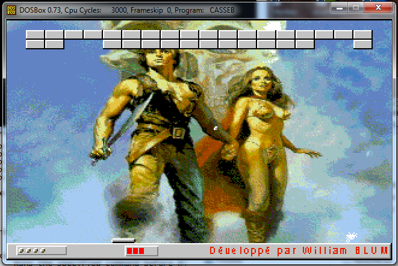

Other softwares
Other softwares
Domenico
This is a small game where you must match icons. There are multiple difficulty levels. It's even more addictive than Windows Minesweeper. Bill Gates has once contacted me and proposed me to release it with Windows 98 Windows Vista. Unfortunately for him, he was not rich enough to afford the price of my labour so I had to turn down the offer.
| Filename | Date | Size | Description |
|---|---|---|---|
| domeni10.zip | 11th June 1998 | 728kb | Domenico 1.0 for Windows 3.1/95/98/NT Includes English, French, 16 and 32 bits version. Requires Visual Basic 4.0 Runtimes |
CasseB
This is a block breaker game written in C. I have developped this game at a time where I was learning game programming in DOS. My aunt really likes it, I am sure you'll love it too.
| Filename | Date | Size | Description |
|---|---|---|---|
| casseb.zip | 9th August 1998 | 129kb | CasseB Small game for MS/DOS (still run on Windows XP). |
Stock-It
Stock-It is a stock-management software that I developed long-time ago for a french high-school in Besançon (France). It was used by students and teachers to manage stocks of plumbing. Stock-It has powerful features that allows the teacher to control the work done by his students.
| Filename | Date | Size | Description |
|---|---|---|---|
| stkit20.zip | 21th June 1999 | 496kb | Stock-It 2.0 Requires Visual Basic 6.0 Runtimes |
| stkit10c.zip | 5th August 1998 | 749 kb | Stock-It 1.0c (French) This is the first version of Stockit. The application is a 16 bits binary for Windows 3.1,95 or NT. |
SIP 2.0 (Small Installation Packager)
This is a Perl Script which can be used to create tiny installation package for your own software. To run this script, you need a Perl interpreter on your computer such as ActivePerl (freeware)
| Filename | Date | Size | Description |
|---|---|---|---|
| sip20.zip | 21th June 1999 | 10kb | SIP 2.0 |
RLGui 1.0 (Resource Localization GUI)
RLGui is a token file editor. It is used to edit token files created with the Micrsoft Resources Localization Tools. It was originally developped as a tool to help translating Cracklock.
| Filename | Date | Size | Description |
|---|---|---|---|
| rlgui10.zip | 14th May 2001 | 406 kb | RLGUI 1.0 Requires Visual Basic 6.0 Runtimes |
NetNotifier
When you are wired to the Internet via a shared phone connection, you don't know when the connexion is opened or closed. This tool tells you when the connection is available by playing a sound and showing you an icon in the tray notification bar.
| Filename | Date | Size | Description |
|---|---|---|---|
| netn20.zip | 5th July 2000 | 37 kb | NetNotifier Requires Visual Basic 6.0 Runtimes |